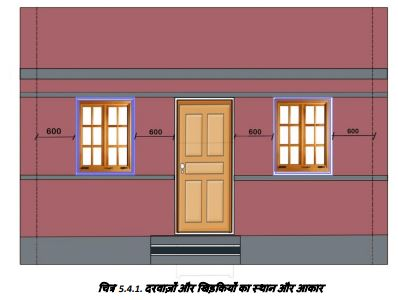

किसी घर में दरवाजों और खिड़कियों के लिए आदर्श आकार क्या हैं?
दरवाजे और खिड़कियॉं दीवार की आंतरिक सतह से 600mm दूर होनी चाहिए और उनके बीच की दूरी भी कम से कम 600mm होनी चाहिए।
भूकंपीय गतिविधि से सुरक्षा के लिए खिड़की की चौड़ाई 600mm है। हालाँकि, कम ऊंचाई पर, यह 900mm तक हो सकता है।
दरवाजे और खिड़कियां दीवार के कोनों से कम से कम 450उउ की दूरी पर स्थित होनी चाहिए। एनबीसी 2016 के अनुसार सामान्य आकार निम्नलिखित हैः
1. दरवाजा:
मुख्य द्वारः 1000 x 2100उउ से 1200 x 2100mm
रसोईः 900 x 2100mm
शौचालयः 750 x 2100mm
2. खिड़की:
मिश्रित जलवायु के लिए कमरे के फर्श क्षेत्र का 1/8वां भाग, ठंडी जलवायु के लिए कमरे के फर्श क्षेत्र का 1/12वाँ भाग